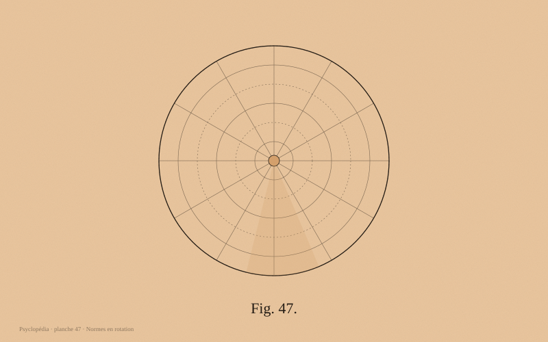

🎯 À l'issue de cette fiche, tu sauras :
- Distinguer les processus psychologiques universels de ceux façonnés par la culture
- Maîtriser les dimensions culturelles de Hofstede et le clivage individualisme/collectivisme
- Comprendre le biais WEIRD et ses conséquences sur la validité des connaissances
- Savoir décrire les phases de l'acculturation et du choc culturel

Pourquoi la culture change la psychologie
Pendant un siècle, la psychologie a considéré ses résultats comme valables pour l'espèce humaine entière. En 2010, Joseph Henrich et ses collègues montrent que 96 % des participants aux études publiées proviennent de pays occidentaux, éduqués, industrialisés, riches et démocratiques — les sociétés WEIRD (Western, Educated, Industrialized, Rich, Democratic), soit environ 12 % de l'humanité.
Le problème n'est pas seulement statistique. Sur de nombreuses tâches, les populations WEIRD sont atypiques, y compris sur des mécanismes réputés élémentaires : sensibilité à l'illusion de Müller-Lyer, raisonnement analytique contre raisonnement holistique, conception du soi, notions d'équité. Autrement dit, une partie de ce que nous appelions « la nature humaine » décrivait en réalité une culture particulière.
Les dimensions culturelles de Hofstede
À partir d'une enquête menée auprès de plus de 100 000 salariés d'IBM dans 50 pays, Geert Hofstede a dégagé six dimensions permettant de comparer les cultures nationales :
- Distance hiérarchique : degré d'acceptation d'une répartition inégale du pouvoir. Élevée en Malaisie ou en France, faible au Danemark ou en Israël.
- Individualisme / collectivisme : le soi se définit-il comme indépendant ou comme membre d'un groupe ?
- Masculinité / féminité : valorisation de la compétition et de la réussite, ou de la coopération et de la qualité de vie.
- Évitement de l'incertitude : tolérance à l'ambiguïté et besoin de règles explicites (très élevé en Grèce et au Portugal).
- Orientation à long terme : épargne et persévérance contre satisfaction immédiate et respect des traditions.
- Indulgence / retenue : liberté accordée à la satisfaction des désirs.
Limite majeure : assimiler une nation à une culture homogène est une simplification. Les variations à l'intérieur d'un pays sont souvent plus grandes qu'entre pays.
Soi indépendant, soi interdépendant
Markus et Kitayama (1991) ont montré que la conception même du soi varie :
- Soi indépendant (plutôt occidental) : je suis défini par mes attributs stables, mes goûts, mes choix. Se distinguer est valorisé. « La roue qui grince reçoit la graisse. »
- Soi interdépendant (plutôt est-asiatique) : je suis défini par mes relations, mes rôles et ma place dans un ensemble. S'ajuster est valorisé. « Le clou qui dépasse reçoit le marteau. »
Cette différence a des conséquences mesurables : styles d'attribution causale, expression des émotions, motivation au travail, préférence pour le choix personnel, et jusqu'à la manière de décrire une scène visuelle (les participants japonais rapportent davantage le contexte, les participants américains l'objet central).
Acculturation et choc culturel
John Berry décrit quatre stratégies d'acculturation, selon que la personne conserve sa culture d'origine et qu'elle adopte celle du pays d'accueil :
- Intégration : conserver et adopter. Stratégie associée au meilleur bien-être psychologique.
- Assimilation : abandonner sa culture d'origine au profit de la nouvelle.
- Séparation : conserver sa culture et rejeter la nouvelle.
- Marginalisation : perdre l'une sans acquérir l'autre. Stratégie associée à la plus forte détresse.
Le choc culturel suit classiquement une courbe en U : lune de miel, crise, ajustement, adaptation. Le choc du retour au pays est souvent plus déstabilisant que le départ, car il n'est pas anticipé.
Culture et santé mentale
Les troubles psychiques existent partout, mais leur expression, leur interprétation et leur prise en charge varient fortement. On parle d'idiomes culturels de détresse : en Asie du Sud-Est, la dépression s'exprime souvent par des plaintes somatiques plutôt que par la tristesse verbalisée.
Certains syndromes sont propres à un contexte culturel : le taijin kyofusho japonais (peur d'incommoder autrui par son apparence ou son odeur), l'ataque de nervios latino-américain, le koro en Asie du Sud-Est. Le DSM-5 intègre désormais un entretien de formulation culturelle pour éviter les erreurs de diagnostic.
Conséquence pratique : un test étalonné sur une population ne peut pas être appliqué tel quel à une autre. La traduction ne suffit pas, il faut une validation transculturelle complète.
Communication interculturelle
Edward T. Hall distingue les cultures à contexte fort (Japon, pays arabes, France dans une certaine mesure), où le sens réside largement dans l'implicite, la relation et le non-verbal, et les cultures à contexte faible (Allemagne, Scandinavie, États-Unis), où le message doit être explicite.
Il décrit aussi deux rapports au temps : monochronique (une tâche à la fois, ponctualité, planification) et polychronique (plusieurs activités simultanées, souplesse, priorité à la relation). Beaucoup de malentendus professionnels internationaux naissent de ces écarts, interprétés à tort comme des manques de respect ou de sérieux.
🖼️ Les visages de ce domaine
 Charles Darwin
Charles Darwin📕 Lire les sources originales
Ces ouvrages du domaine public sont hébergés dans ce dépôt et se lisent directement dans le site, page par page, avec extraction du texte, modernisation du français ancien et reconnaissance optique pour les pages scannées.
Astuce d'apprentissage : lis la fiche en entier, puis teste-toi immédiatement avec les flashcards sans regarder le texte. Ce rappel actif ancre bien mieux les connaissances qu'une relecture. Reviens réviser dans 2 jours, puis dans 1 semaine, puis dans 1 mois.
🔄 5 fiches de révision — rappel actif
Clique sur chaque carte pour révéler la réponse. Essaie de répondre avant de cliquer : c'est l'effort de rappel qui fixe la mémoire.